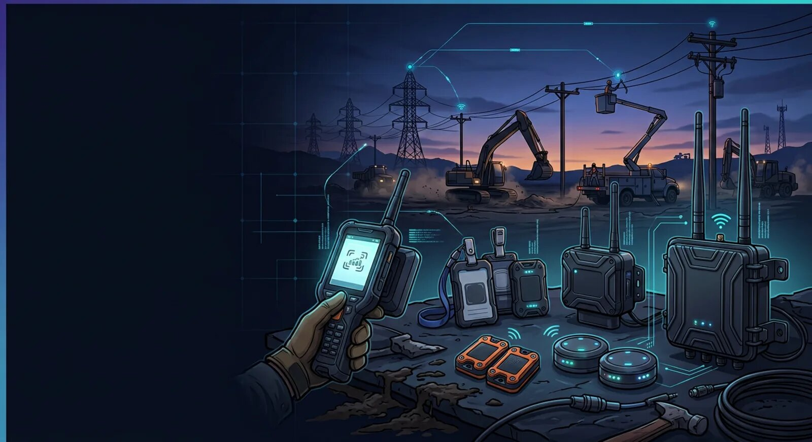

Rugged RFID, BLE, GPS, and LoRaWAN hardware supporting crew identification, asset tracking, access control, and utility infrastructure operations.

Utility construction projects expose field equipment to demanding operating conditions that include extreme temperatures, heavy rainfall, dust, vibration, mud, uneven terrain, and continuous transportation between active work locations. Devices supporting workforce identification, material accountability, and equipment visibility must operate reliably throughout transmission line construction, underground pipeline installation, substation development, and utility corridor expansion.
UtilCon AI provides enterprise AI and IoT hardware designed for these environments. The hardware portfolio includes RFID devices, BLE technologies, GPS tracking equipment, rugged wearable devices, access readers, and long-range wireless communication equipment selected for utility construction operations where dependable identification and location capabilities are essential.
Artificial Intelligence of Things, commonly called AIoT or AI and IoT, combines artificial intelligence with connected industrial devices and wireless technologies. Within this environment, field hardware provides trusted identification and location information that supports AI software, project management systems, engineering applications, and construction documentation.
Rather than focusing on environmental monitoring, the hardware emphasizes identification and location solutions that help construction organizations manage personnel, materials, mobile assets, and project activities throughout the construction lifecycle.
Common deployment environments include:
Utility construction differs significantly from manufacturing facilities and permanent industrial sites. Equipment is frequently transported between projects, temporary staging yards, right-of-way corridors, and remote construction locations. Devices must remain operational despite constant movement and exposure to demanding field conditions.
UtilCon AI hardware is selected to support long-term deployment in environments where durability, identification reliability, and operational consistency are important.
Typical design considerations include:
These characteristics help organizations deploy identification technologies across geographically distributed construction projects while minimizing operational interruptions.
Field devices form the operational foundation of AI and IoT deployments across utility construction projects. They identify personnel, construction materials, equipment, and work locations while providing dependable operation throughout changing project conditions.
UtilCon AI supports several categories of field hardware selected for utility construction applications.
Utility construction personnel often work across large project areas while moving between excavation sites, pole installation zones, substations, and temporary staging locations. Wearable identification devices provide a consistent digital identity that supports workforce management throughout daily operations.
Typical wearable devices include:
These devices are designed to withstand repeated daily use while supporting workforce identification across multiple construction projects.
Construction materials and equipment frequently travel between suppliers, warehouses, staging yards, transportation vehicles, and installation sites before becoming part of permanent infrastructure.
Asset identification tags can be attached to:
Each asset receives a persistent digital identity that remains associated with project documentation throughout transportation, installation, and commissioning.
Construction sites require dependable identification equipment capable of verifying authorized personnel entering controlled work areas.
Site access readers may be installed at:
These readers communicate with workforce identification devices to support secure access management while maintaining accurate project records.
AI and IoT hardware supports a broad range of utility construction activities where durable identification technologies improve workforce coordination and material accountability.
Typical applications include:
Each deployment environment requires hardware capable of maintaining reliable operation despite changing weather, transportation demands, and continuous field activity.
RFID technology forms the foundation of many identification and location workflows across utility construction projects. Unlike manual labeling methods, RFID enables construction organizations to assign a persistent digital identity to personnel, materials, equipment, and infrastructure components throughout the construction lifecycle.
UtilCon AI supports industrial RFID hardware selected for demanding field environments where utility construction activities extend across transmission corridors, underground pipeline routes, substations, and temporary construction compounds.
RFID hardware is commonly deployed to identify:
The combination of rugged RFID devices and enterprise software helps maintain consistent identification records from project mobilization through commissioning and project closeout.
Utility poles, transmission structures, and related infrastructure components often require permanent identification throughout transportation, installation, inspection, and future maintenance activities.
Industrial RFID pole tags provide durable identification designed for outdoor deployment.
Typical characteristics include:
Pole identification supports project documentation, installation verification, inventory management, and long-term infrastructure records.
Construction personnel regularly move between staging yards, construction zones, field offices, and project access points.
Industrial RFID badges provide a secure digital identity for:
These badges help maintain consistent workforce identification while supporting authorized access management across distributed construction sites.
Bluetooth Low Energy (BLE) technologies provide short-range wireless identification that complements RFID in utility construction environments. BLE devices support location awareness, proximity-based workflows, and temporary project deployments where flexible installation is beneficial.
UtilCon AI supports enterprise BLE hardware designed for industrial construction operations.
Typical BLE deployment locations include:
BLE technologies enhance identification workflows by providing additional location context for personnel and mobile assets operating within defined project areas.
BLE proximity beacons broadcast identification signals that authorized mobile devices or gateways can recognize when personnel or equipment enter designated operational areas.
Construction organizations commonly deploy BLE beacons to support:
Because BLE beacons are compact and easy to relocate, they are well suited to construction environments where work areas change as projects progress.
Utility construction projects often involve fleets of service trucks, bucket trucks, excavators, directional drilling equipment, cranes, welding vehicles, and material transport vehicles operating across extensive geographic regions.
GPS technologies provide reliable location information for these mobile resources.
UtilCon AI supports industrial GPS hardware that assists organizations in maintaining operational visibility across distributed construction activities.
GPS-enabled equipment commonly includes:
Location information supports logistics planning, resource coordination, fleet utilization, and project scheduling.
Industrial GPS tracking units are designed for continuous operation within demanding construction environments.
Typical features include:
Construction organizations use GPS tracking to improve coordination between field crews, dispatch personnel, logistics coordinators, and project managers.
Selecting appropriate hardware depends on project characteristics, environmental conditions, construction methods, and operational requirements. UtilCon AI helps organizations evaluate hardware combinations that align with workforce identification, material accountability, and equipment visibility objectives.
Common selection factors include:
Choosing hardware based on operational requirements helps improve long-term reliability while supporting standardized deployment practices across multiple utility construction projects.
RFID: Identification for crew badges, utility poles, cable reels, and pipe sections.
BLE: Proximity awareness for work zones, staging yards, and equipment areas.
GPS: Location tracking for construction vehicles, fleet operations, and mobile equipment.
Utility construction projects frequently extend across transmission corridors, pipeline rights-of-way, renewable energy interconnections, and remote infrastructure locations where conventional communication coverage may be limited. Long-distance projects require reliable communication between field devices, mobile equipment, temporary field offices, and project management systems.
UtilCon AI supports LoRaWAN hardware that provides long-range wireless communications for distributed utility construction environments. Within this solution, LoRaWAN devices primarily support identification and location workflows by connecting field equipment and communication gateways across expansive project areas.
Typical deployment environments include:
Long-range wireless connectivity helps construction organizations maintain communication across geographically dispersed work locations while reducing the need for extensive communication infrastructure.
LoRaWAN communication devices provide reliable long-range connectivity for identification events generated by RFID readers, mobile identification equipment, and field gateways.
Typical capabilities include:
These devices help extend identification workflows across large construction projects while supporting centralized project administration.
Utility construction hardware operates in environments that are significantly more demanding than controlled indoor facilities. Equipment may be exposed to rain, dust, vibration, mud, direct sunlight, construction debris, and frequent transportation between project locations.
UtilCon AI hardware is selected with field deployment requirements in mind to support dependable operation throughout the construction lifecycle.
Typical environmental considerations include:
These characteristics help reduce equipment downtime while supporting reliable identification and communication across utility construction projects.
Different stages of utility construction require different combinations of connected hardware. Selecting the appropriate devices depends on project scope, work methods, workforce size, and operational objectives.
Examples of hardware deployment include:
Typical hardware includes:
Common deployments include:
Frequently deployed hardware includes:
Emergency restoration projects often require rapidly deployable hardware such as:
These deployment combinations can be adapted as projects progress through planning, construction, commissioning, and closeout.
Large utility contractors often manage multiple projects across different regions while coordinating employees, subcontractors, suppliers, equipment fleets, and construction materials.
UtilCon AI hardware is designed to support enterprise-scale deployments by enabling standardized identification technologies across diverse project environments. Standardized hardware selection helps simplify maintenance, reduce training requirements, and improve consistency across regional operations.
Organizations can implement common hardware standards for:
This standardized approach supports operational consistency throughout geographically distributed construction programs.
UtilCon AI is developed within Aperture Venture Studio, with support from GAO, leveraging more than two decades of experience delivering IoT technologies for industrial organizations. Experience gained from thousands of customer engagements and successful IoT projects has contributed to practical hardware selection for demanding utility construction environments.
Development is supported by continued investment in research and development, comprehensive quality assurance practices, and technical assistance delivered remotely or onsite. Teams include Ph.D. professionals, experienced engineers, industry specialists, strategic partners, and technology investors. Related organizations have also supported Fortune 500 companies, leading research institutions, prestigious universities, and government agencies throughout the United States and Canada.
AI and IoT hardware provides the physical foundation for identification and location solutions throughout utility construction operations. Rugged RFID devices, BLE technologies, GPS trackers, and LoRaWAN communication equipment work together to support workforce visibility, material accountability, fleet coordination, and project documentation across distributed construction environments.
Applications include:
Selecting appropriate industrial hardware helps construction organizations establish reliable identification processes that support operational efficiency throughout the project lifecycle.
The following standards and regulations are among the most relevant for AI-enabled workforce identification, access control, asset tracking, inventory management, work-in-progress documentation, and traceability in utility construction projects involving transmission lines, underground pipelines, substations, utility corridors, and related infrastructure.
Electrical Safety and Utility Construction
Utility Construction and Infrastructure Standards
RFID, Identification, and Automatic Data Capture
Wireless Communications
GPS and Positioning
Cybersecurity
Artificial Intelligence
Quality and Asset Management
Environmental and Rugged Device Standards
Functional Safety
Canadian Occupational Health and Safety
Large-scale transmission line construction projects extending across utility rights-of-way required improved workforce accountability, secure access management, utility pole identification, equipment visibility, and material traceability. Multiple contractors, mobile work crews, temporary staging yards, heavy equipment, and continuously changing work zones created operational challenges for project coordination and documentation.
UtilCon AI developed an AI and IoT solution focused on identification and location workflows rather than environmental monitoring. Drawing upon our implementation experience together with GAO, GAO Tek Inc., and GAO RFID Inc., we assisted the organization with selecting, deploying, integrating, and commissioning industrial RFID, BLE, GPS, and long-range communication hardware throughout active utility construction operations.
Industrial RFID technologies formed the primary identification layer. UHF RFID Readers, UHF Tags, RFID Antennas, and RFID Accessories supplied through GAO RFID Inc. and GAO Tek Inc. were deployed to identify utility poles, cable reels, transformers, conductor reels, mobile tool containers, and construction equipment. Rugged RFID crew badges provided workforce identification throughout distributed construction zones.
BLE Gateways and BLE Beacons supplied through GAO RFID Inc. complemented RFID deployments by supporting workforce proximity awareness around temporary construction compounds, staging yards, and controlled work areas. GPS IoT Trackers supplied through GAO Tek Inc. were installed on bucket trucks, cranes, excavators, welding vehicles, and supervisor vehicles to improve fleet coordination across geographically dispersed work locations.
LoRaWAN Gateways were introduced where communication coverage along transmission corridors required long-distance connectivity between remote work areas and centralized field offices.
Problem
Solution
UtilCon AI implemented an AI and RFID and AI and BLE solution integrating industrial identification hardware with enterprise construction software.
The deployed hardware included:
Hardware deployment focused on:
AI software processed validated identification events generated by the hardware, allowing supervisors to review workforce allocation, equipment utilization, work package status, installation documentation, and inventory records.
Result
Lesson Learned
Utility construction projects benefit when RFID identification is assigned before materials arrive at staging yards. Early tagging reduces later administrative effort and improves installation traceability throughout the construction lifecycle.
Underground utility construction projects involving water transmission pipelines, underground electrical conduits, and fiber utility corridors required reliable identification of construction personnel, equipment, utility materials, and completed installation activities. Mobile construction operations frequently relocated between excavation areas, directional drilling sites, temporary compounds, and restoration work zones.
UtilCon AI worked together with GAO, GAO Tek Inc., and GAO RFID Inc. to deploy industrial AI and IoT hardware supporting identification and location workflows across underground utility construction operations. The objective focused on improving workforce visibility, secure access management, material accountability, inventory administration, and installation traceability.
Industrial RFID hardware formed the primary identification solution. RFID UHF Readers, RFID Tags, RFID Accessories, and RFID Reader Modules supplied through GAO RFID Inc. supported digital identification of pipe sections, conduit bundles, utility vault assemblies, mobile equipment, and contractor work packages.
BLE Beacons supplied through GAO RFID Inc. provided configurable proximity identification around excavation sites, directional drilling operations, temporary storage compounds, and contractor work areas. GPS IoT Devices supplied through GAO Tek Inc. supported fleet visibility for excavators, trenchers, vacuum excavation vehicles, utility trucks, and material transport vehicles.
Because several construction sections were located in remote utility easements, LoRaWAN Gateways supplied through GAO Tek Inc. provided reliable communication between field equipment and centralized construction management software.
Problem
Solution
UtilCon AI designed an enterprise AI and IoT hardware solution emphasizing identification and location technologies.
The solution incorporated:
Deployment focused on:
AI software consumed validated identification records from the deployed hardware to support construction reporting, material accountability, workforce coordination, and project documentation.
Result
Lesson Learned
Underground utility construction projects achieve better long-term traceability when identification hardware is integrated into daily construction workflows instead of being introduced only during project closeout. Early deployment improves documentation quality and simplifies future infrastructure maintenance.
Electrical substation construction projects require close coordination among electrical contractors, civil construction teams, equipment installers, commissioning personnel, inspectors, and project managers. Large numbers of transformers, switchgear assemblies, steel structures, control cabinets, cable reels, and specialized construction equipment move through staging areas before installation. Maintaining accurate workforce identification, controlled access, asset accountability, inventory management, and installation traceability is essential throughout project execution.
UtilCon AI collaborated with GAO, GAO Tek Inc., and GAO RFID Inc. to implement an AI and IoT solution centered on identification and location technologies for a multi-phase substation construction program. The objective was to establish standardized digital identification workflows supporting workforce coordination, material accountability, equipment utilization, and project documentation without altering existing engineering and construction processes.
Industrial RFID hardware served as the primary identification technology. UHF RFID Readers, UHF Tags, RFID Antennas, and RFID Accessories supplied through GAO RFID Inc. and GAO Tek Inc. were deployed to identify transformers, switchgear, prefabricated assemblies, cable reels, portable generators, mobile tool containers, and construction equipment. RFID crew badges supported workforce identification and controlled entry into restricted construction zones.
BLE Gateways and BLE Beacons supplied through GAO RFID Inc. provided additional location awareness around staging areas, temporary field offices, equipment laydown yards, and designated contractor work zones. GPS IoT Trackers supplied through GAO Tek Inc. were installed on cranes, bucket trucks, service vehicles, and mobile lifting equipment to improve equipment allocation and project logistics.
LoRaWAN Gateways supplied through GAO Tek Inc. extended communication coverage between field hardware and project offices where distributed construction areas required reliable long-range connectivity.
Problem
Solution
UtilCon AI implemented an AI and RFID and AI and BLE solution integrating industrial hardware with construction software and project documentation systems.
The deployed hardware included:
The solution supported:
AI software processed validated identification records generated by the deployed hardware to organize workforce activity, asset movement, inventory status, and project documentation for engineering, quality assurance, and project management teams.
Result
Lesson Learned
Substation construction projects benefit from standardized identification procedures established before equipment delivery. Early hardware deployment improves coordination among multiple contractors and simplifies engineering documentation during commissioning.
Municipal utility expansion projects involving electrical distribution, underground utility corridors, water transmission infrastructure, and public utility improvements required improved workforce coordination, contractor access management, construction inventory control, and infrastructure traceability. Construction activities occurred simultaneously across multiple work zones while maintaining access for residents, municipal services, and utility operations.
UtilCon AI worked alongside GAO, GAO Tek Inc., and GAO RFID Inc. to deploy an AI and IoT hardware solution supporting identification and location workflows throughout distributed municipal utility construction activities. The implementation emphasized reliable workforce identification, material accountability, equipment visibility, and digital documentation using industrial RFID, BLE, GPS, and long-range wireless technologies.
UHF RFID Readers, UHF Tags, RFID Reader Modules, RFID Accessories, and RFID Antennas supplied through GAO RFID Inc. enabled digital identification of utility poles, underground conduit sections, pipe assemblies, electrical equipment, material containers, and mobile construction assets. RFID crew badges supported secure workforce identification and contractor access management across active municipal construction sites.
BLE Gateways and BLE Beacons supplied through GAO RFID Inc. were deployed around temporary work compounds, utility corridors, staging yards, and controlled construction zones to strengthen workforce location awareness and operational coordination. GPS IoT Devices supplied through GAO Tek Inc. supported visibility of fleet vehicles, excavation equipment, service trucks, and construction supervisors operating across multiple municipal projects.
LoRaWAN Gateways supplied through GAO Tek Inc. extended reliable communication across distributed work locations where conventional connectivity varied throughout the construction corridor.
Problem
Solution
UtilCon AI deployed an enterprise AI and IoT solution integrating industrial identification hardware with project documentation and construction software.
The deployed hardware included:
The solution supported:
AI software analyzed validated identification records from deployed hardware to organize workforce activity, asset movements, fleet operations, inventory records, and construction documentation throughout the municipal utility program.
Result
Lesson Learned
Municipal utility construction programs benefit from standardized hardware configurations across all project locations. Consistent RFID, BLE, GPS, and long-range communication technologies simplify workforce administration, asset identification, and documentation while supporting future maintenance activities after project completion.
Every utility construction project presents unique environmental conditions, workforce requirements, communication challenges, and infrastructure objectives. Choosing the right combination of RFID, BLE, GPS, and LoRaWAN hardware begins with understanding project workflows and operational priorities.
The UtilCon AI team works with utility contractors, engineering organizations, infrastructure owners, and project managers to recommend hardware solutions that integrate with existing IoT software, AI applications, and enterprise systems.
Whether your organization is constructing transmission lines, underground pipelines, substations, renewable energy connections, or municipal utility infrastructure, our specialists can help identify hardware technologies that align with your project requirements.
Contact UtilCon AI →